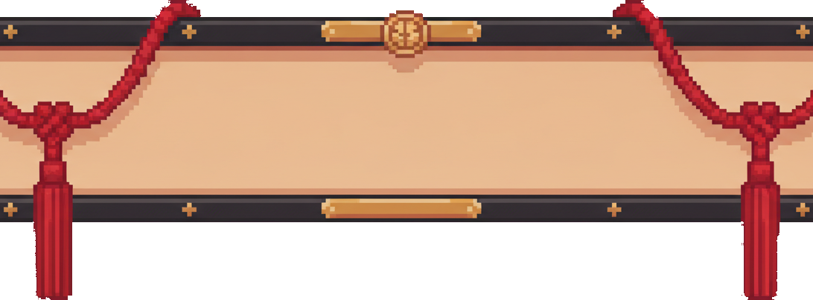
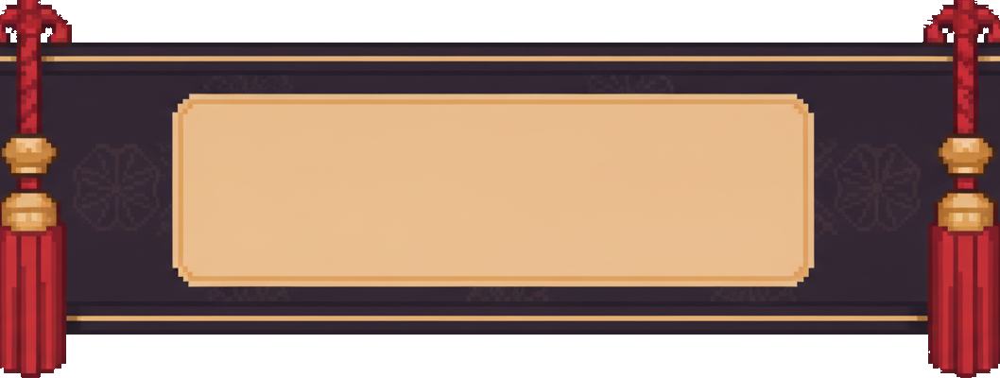
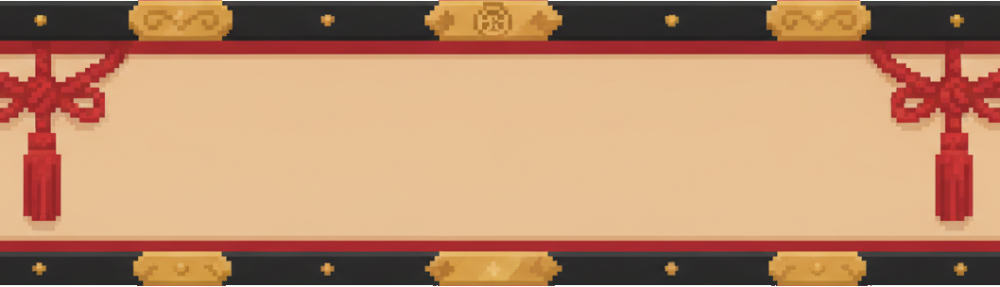
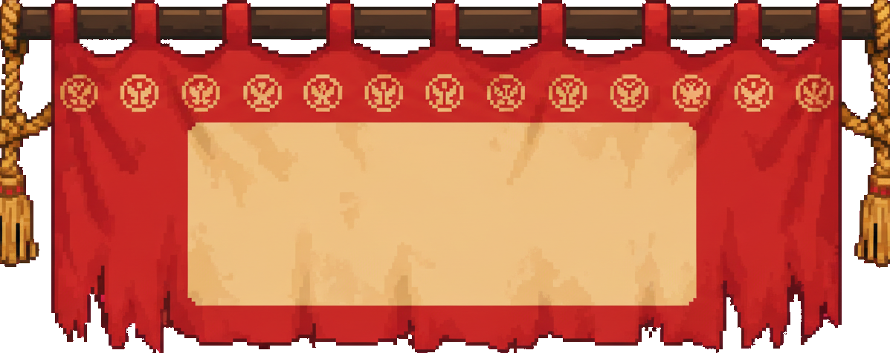

全屏横批 — 边到边 4 案 banner-design-lab · R2
上一轮的问题:横幅不是全屏宽(黑带 + 两个圆纹章 + 几根金线是程序画的,不是实物)。本轮 4 案全部:①真·1024 全幅,匾体两端被屏幕切断(匾比屏幕更长的错觉),素材已抠底、原生像素密度,不靠放大裁切;②生图实物匾/幕,牌匾 + 流苏语汇;③预览为 1024×576 全尺寸游戏画面、横批按实装位置摆放(文字中心 = 游戏公告线 cy250),所见即实装比例。四案统一演示「一本目 / ROUND 1」。
V1 ★推荐
素匾长条 — 漆轨金杆 · 双绦流苏
最"横批":最扁、最舒展
ROUND START · FULL-BLEED 1024

一本目ROUND 1
定位:贴合你说的"长条"——上下两根细漆轨 + 金杆饰 + 顶心金纹章,双股编绳流苏垂在两侧;纸面最宽,文字最透气。绳从画外上方垂入,有"挂在屏幕外"的空间感。
V2
墨檀锦匾 — 暗纹檀底 · 金框纸窗 · 金冒流苏
最华丽、最典礼
ROUND START · FULL-BLEED 1024

一本目ROUND 1
定位:深檀色暗花缎底横贯全屏,中央金圆角纸窗承字,两端整支金冒红流苏压边——装饰量最大,K.O./结算这类"重时刻"最压场。
V3
奉纳漆匾 — 黑漆厚框 · 云纹金件 · 结绳流苏
上一轮牌匾的全屏版
ROUND START · FULL-BLEED 1024

一本目ROUND 1
定位:你之前喜欢的那块奉纳匾直接拉通全屏:厚漆框 + 云纹金件 + 铆钉 + 内圈朱线,中国结流苏挂两侧。四案里最矮(294px),遮挡最小。
V4
陣幕帘 — 顶挂绯幕 · 纹章横列 · 金绳大流苏
从屏幕顶垂下,战味最浓
ROUND START · FULL-BLEED 1024

一本目ROUND 1
定位:唯一"从屏幕顶上挂下来"的一案:木杆贴顶、绯布撕边下摆、十三枚纹章横列、金绳大流苏坠两角。仪式换成杀气,公告可做"揭幕"演出(幕布落下→定字)。
四案对比
| 方案 | 气质 | 占屏高度 | 备注 |
|---|
| V1 素匾长条 ★ | 舒展·正统横批 | 380px(纸面扁) | 最贴"长条"要求;流苏最醒目 |
| V2 墨檀锦匾 | 华丽·典礼 | 387px | 装饰密度最高;暗底上金字也可 |
| V3 奉纳漆匾 | 权威·official | 294px(最矮) | 与你认可的结算匾同语汇,遮挡最小 |
| V4 陣幕帘 | 杀气·战阵 | 407px(贴顶) | 可做落幕出场动画;下摆撕边有动势 |
我的推荐:V1 素匾长条——同时满足你点的三件事:横跨全屏、长条比例、牌匾+流苏。V2 留作 K.O./结算"重时刻"的升级选项(混编思路)。
拍板后实装:替换 annBack 程序画带 → 实物横批资产(1024 全幅,文字改墨色落纸面),再用参考图重绘出一版败北灰调孪生(同构图换灰蓝布)给 DEFEAT。原图在 assets/ui-lab/band-full-*.png;哪处不满意(颜色/流苏位置/匾体高度)说一声,单独重 roll,30 秒一张。